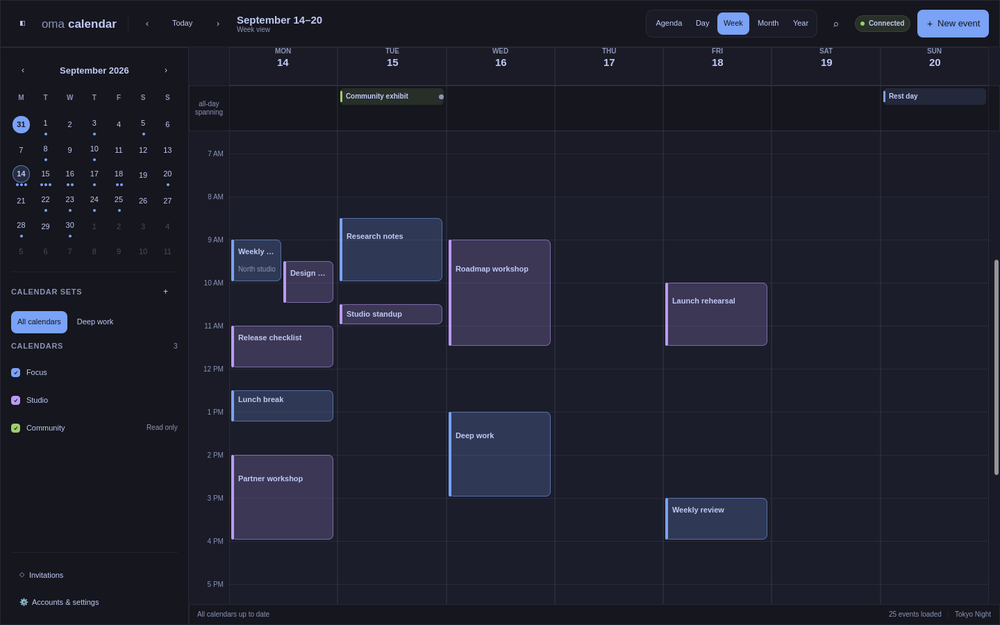
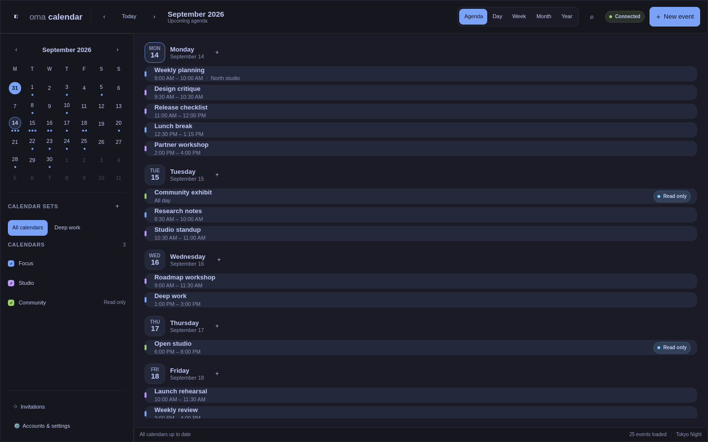

OmaCalendar
A fast, local-first calendar that brings your agenda, event editing, Google Calendar, and CalDAV into a native desktop app and an Omarchy Quickshell widget.
Built for the desktop
OmaCalendar keeps a local calendar cache for responsive offline use. A shared background service powers both the Qt Quick application and its Quickshell widget, while credentials remain in the Linux desktop Secret Service.
OmaCalendar 1.0 is here. Install the native Arch package for current x86-64 Omarchy. Open source under the MIT License.
Calendar views that stay out of the way
Move between agenda, day, week, month, and year views; edit events without leaving the calendar; and keep the same cached data available to the independently released Omarchy widget.



Screenshots use example calendar data.
Download OmaCalendar 1.0
Install the native x86-64 Arch package for current Arch/Omarchy. Downloads include checksums, build provenance and a software inventory.
Download 1.0.0 · Installation guide · Optional widget
Connect calendars in Accounts & settings. Use calendar sets to switch between work, family, and personal schedules.